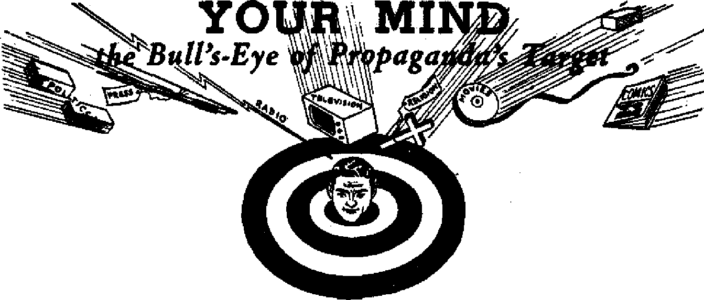

Two smashing victories won in Canada
Have they advanced with these modem times?
Is the ship of state headed for a wreck on the rocks of socialism and dictatorship?
Masked Robber of the Wilds Food-washing only one of Mn Raccoon’s many intriguing traits
OCTOBER 8, 1952 semimonthly
THE MISSION OF THIS JOURNAL
News sources that are able to keep you awake to the vital lames of our timqs must be unfettered by censorship and sel£sh interests. “Awake!*1 has no fetters. It recognizes facts, faces facts, is free to publish facts; It Is not bound by political ambitions or obligations; it jg unhampered by advertisers wnoee toes must not be trodden on; it la unprejudiced by traditional creeds. This journal keeps Itself free that it may speak freely to you. But it does not abuse Its freedom. It maintains Integrity to truth.
“Awake I1* uses the regular news channels, but is not dependent on them. Its own correspondents are on all continents, In scores of nations. From the four comers of the earth their uncensored, on 'the*scenes reports come to you through these columns. This journal's viewpoint is not narrow, but Is international. It is read in many nations, in many languages, by persons of all ages. Through Its pages many fields of knowledge pass in review—government^ commerce, religion, history, geography, science, social conditions, natural wonders—why, its coverage is as broad as the earth and as high as the heavens.
“Awake!” pledges itself to righteous principles, to exposing hidden foes and subtle dangers, to championing freedom for all, to comforting mourners and strengthening those disheartened by the failures of a delinquent world, reflecting sure hope for the establishment of a right* eous Naw World.
Get acquainted with “Awake!” Keep awake by reading “Awakef"
Published Semimonthly By watchtower bible and tract society, INC.
117 Adame Street Brooklyn 1> N. Y., U. S. A.
N, H. KnorA, President Grant Suiter, Secretary
Printing this l»ue: 475,000
lauiMita Ie wkleb thk huiuIm It nblhhid: SemlinanthlT—Afrikaim, Entlljii, Finnish, French, (kraiftn. HoBsadlsJi, Norwnkn, Spanish, fiwtdlrib Monthly—Dsclah, (frefefc, Portuguese, nn*lnitp.
Officea TetrJp jp&wtJpUow Rate
ABtrJrt, UA, 117 Adaau St, Brooldja 1, N V. |1 Airtnlli, 11 Beresford M, Strsthneid, N.S.W, Bb CaiiHt, 1G Irwin Are,, Toronto fi, OnUrfo |1 EiillkM, 34 Craven Terrace, London, W. 3 7s Swiff Afrirt, Private Bai, P.O. ElandjfonteVn,
Trunivaal Ta
Ffve a copy
IteMlihnMi should be sent to rflca in jnnr country la compiiiBOB with reculationii to luarutea safe deliiery of money. Remittances we accepted at Brooklyn from cnuntries wfaera no office te located, by InternatlOTHi mcnay anta only. Subscription rates In different cmmtrfes we here itated In local currency. ttetloo af UptMtion (with renewal blank) is arat at least tm hsnes before stfwcripttan ei-plm. Chinn «f iMrtu when sent to ow office may be expected effective within one month. Send your old ts well n new addfM&
Epter*d m ucond-ctat matter at Brooklyn, N. V.
Art <jf March I ST?- frtautf la LT. $. 4.
CONTENTS
Persecutors of Children Put to Rout 3 Common-Sense Reaction Chills
Jehovah's Witnesses Cannot Be Denied
T Have Taught from House to House’ 11
Disfranchising the Negro in
What Sweden Thinks of Religion
“Your Word Is Truth'1
Prayer Solely “a Self-generating Power"?
Jehovah's Witnesses Preach in All the Earth—Denmark
£/ “Now it is high time to awake.”—Romans 13:11 &
Volume XXXIJI
Brooklyn, N.Y.f October a, 1982
Number 19
T HAS been aptly stated that "patriotism is the last refuge of a scoundrel”, and this is the type of patriotism that seemed to afflict members of the Board Of Education of York township, Toronto. Its lack of
By “Awake!" correa pond ent in Canada
Recently In Toronto, Canada, smashing victories were obtained over would-be persecu-tors of innocent children, one concerning forcible flag salute and the other involving custody. The first problem was fought out mostly in the newspapers and the second in a court of law.
fearing parents, who had explained to him the snare of giving honor and worship to inanimate objects. Neither he nor his parents desired that he participate in the flag-salute ceremony being held at a special cele
principle was exposed to the sunlight and received a severe tanning when the board sought to bully and tyrannize a six-year-old boy, one of Jehovah’s witnesses, who declined to be coerced by threats, into saluting the flag contrary to his beliefs and those of his parents.
In 1945 the highest court in Ontario had ruled unanimously that it was not necessary for the children of Jehovah’s witnesses to salute the flag if such exercise conflicted with their religious beliefs. Hiis decision was obtained only after much persecution had been suffered by the children of Jehovah’s witnesses. The York township board, however, did not agree with the tolerant and reasonable view which the court had adopted, and the board, therefore, wanted to revive the type of small-minded persecution that had been laid to rest in this province for a long time.
Bobby Junor, one of Jehovah’s witnesses, a courageous boy, six years of age, had been taught the Scriptures by his Godbration at the school, and accordingly his mother wrote a courteous and reasonable letter to this effect, asking that he be excused. One child’s refraining from raising his arm at a' time when the others do so would not ordinarily cause the collapse of the political institutions of any nation, but one might have thought so to read the fuss and furor created by the township school board when this simple and lawful request was referred to them. Enraged, they sent for Bobby’s parents, who appeared to state their position, which they did despite the interference and bad manners of the board.
Then the storm broke loose as the members of the board began to display their intolerance and bigotry by threats of expulsion, court action and anything else they could think of.
Trustee Frank Oke said: “The flag stands for religious liberties to worship any way a citizen wants to and these people should be glad to salute it.”
OCTOBER 8, 1952
"As long as I am a trustee of the York township board of education the school chll-. dren of York township will salute the flag and all it stands for,” said Trustee Mrs. Florence Gell. "I’m very much afraid the family has mixed religion and citizenship. We receive the protection of the British flag and we should respect it. In all our dealings as a board of education, we keep the welfare of the child uppermost in our minds. In this case we are thinking of that child standing alone and being forced to be different. The child may be expelled from school, but we can’t have any nonsense about the flag.”
"I can’t see why the parents should object to their child saluting on religious grounds,” said Trustee Mrs. Alice Bickerton, “The very fact that our flag is the flag of saints shows what it stands for—freedom of religion. But the custom of recognition of the flag is very essential to the security of Canada. If one child refuses to salute the flag, others will follow suit, and then what kind of youth would we be raising?”
The members of the school board enthusiastically climbed on the flag-waving band wagon. They were ready to demonstrate their courage and patriotism by picking on a little boy, a member of an unpopular minority, and trying to drum up prejudice against him.
J. H. Hartley, acting chairman of the board, thought it was only proper that the child should be obliged to salute the flag whether he believes it or not. "It is only a symbol, anyway,” he said. If it is only a symbol, why make such a fuss about it?
The board knew they were going contrary to the law as laid down by the courts, but Trustee Charles H. Goodfellow evidently had himself tagged as a great legal mind who would show the courts how the law ought to be interpreted. He said: “We are going to attack from a different angle. Our case will be based on the charge that the child’s behavior is detrimental or prejudiced to the other children in the class, and on that basis we can expel him. [Little did he realize that the same argument had been promoted ctd nauseam in the previous case and was entirely rejected by the court.] I am the last one to want to deny anyone freedom of religion. The flag is the source of religious freedom, though, and these people should be glad to salute it I can’t see their point of view,” Whether he can understand it or not is immaterial. The law provides freedom of worship for all, not freedom of worship only if every local trustee can understand it!
Mrs. Junor, the mother of the child, said she and her husband, in common with other witnesses, interpret saluting the flag as a form of worship of a symbol or idol, which is contrary to their beliefs, “We don’t have any symbols in our church and don’t believe in forms of adoration of symbols elsewhere.” Mrs. Junor added that she and her husband are proud to be Canadians and are proud of the flag. “Bobby has been taught to respect the flag and the queen and to love his country.”
This story broke in front-page headlines in one of the Toronto evening papers.
Common-Sense Reaction Chills
Flag-waving Fervor
It was a sad blow to the rabble-rousing efforts of these rural politicians when the people of Toronto, instead of following the flag-waving band wagon of religious prejudice, turned against them. Their own lawyer had warned them to be careful, because the law had already been decided against them and allowed Jehovah’s witnesses to be exempted from this particular ceremony. The Toronto office of the Watch Tower Bible and Tract Society issued a press statement which read, in part:
“Jehovah’s witnesses respect the law and the flag. There is no group in the country that can show a smaller incidence of crime. We believe the flag represents justice and liberty. For this reason we decline to be coerced; we show our respect for the principles the flag stands for by insisting that freedom, the right to be different, be respected in fact, and not simply by lip service. Members of the board talk about freedom, but then insist that action should be taken against anyone who differs from them. They are condemned out of their own mouths.
“While respecting the flag, we decline to worship it. To us the salute is an act of worship, an ascribing of salvation to that inanimate object that represents the state. We ascribe salvation to Jesus Christ alone.
“Early Christians were executed for refusing to put a pinch of salt on the altar of the emperor—the Romans couldn’t understand it, William Penn refused to doff his hat in the presence of King Charles n. Jehovah’s witnesses refused to 'Heil Hitler’ and died for it Maybe the board couldn’t understand any of these things, but they are entitled to respect.
"Someone else has raised the issue of ideological warfare against communism as an excuse for coercion. The communist idea of liberty is liberty only to agree with the majority. The democratic principle allows for tolerance, liberty to be different Now to show her democratic zeal, one member wants to adopt the communist idea of repression and punish a child who dares to show real devotion to liberty by insisting his rights be respected. This is the mind of dictatorship. Such dishonesty provides ready arguments for the enemies of democracy.”
Many other people showed a similar reaction to this matter, and plain logic and common sense began to overcome the noisy, showy emotionalism of the school board. One member of the board, Mr. Arnold Cross, who had not been present at the meeting when this action of the board was taken, made the following very sensible comment:
“Frankly, I don't think it is my business to force any child to salute the flag/* he said. "Neither do I think a child should be expelled for refusing to salute the flag, and I don’t think it’s within the board’s jurisdiction to do so. I don’t want the boy expelled. It’s not his fault, and I would not discriminate against any child* As a matter of fact, I glory in the boy’s spunk. I would like to be present at board meetings," he said, "but under the circumstances, I couldn’t do business with that type of board."
After Dr. Darby Philip, chairman of the board of education, described the proposed action as ridiculous, he said: "It is all too childish. I am humiliated to think the board is even contemplating legal action. A mountain is being made out of a mole hill."
Dr. Gordon A. Sisco, general secretary of the United Church, agreed that you could not, or should not, force anyone to honor a flag, especially if his beliefs to the contrary are based on religious tenets. “You make them salute the flag and what have you gained? Nothing. I take the view
that one has to be very careful about disregarding the religious convictions of other people. This case comes right down to the question of compulsion, and if Bobby and his parents have beliefs different from ours, have we the right to interfere?”
"There has never been any trouble in York township with Jehovah’s witnesses,” Police Chief Robert Alexander said. "To the best of my knowledge they are all lawabiding citizens. They have never done anything here for which they could be criticized.”
“The Provincial Command of the Canadian Legion is not in sympathy with the Township board,” said Major Patrick Biggs, secretary of the Ontario Provincial command of the Canadian Legion. “We believe in the four freedoms.”
Rabbi David Monson, of Beth Sholom synagogue, didn’t think the child should be expelled or his parents prosecuted: “The child’s actions certainly are not based on subversive beliefs. They are religious convictions and since they are the policies of that sect they should be respected as such.”
The Association for Civil Liberties rapped members of the board for their intolerance. The association stated: "Irrespective of whether we agree or disagree with the belief of the Jehovah’s witnesses in not saluting the flag, it is the responsibility of people who hold public office in a democratic country like Canada to see that democratic principles are observed and minority rights to religious freedom respected."
Some Sound Advice, and All Free
The pseudo-patriots who would like to use the flag of freedom and the name of liberty and justice as an excuse to persecute a child who is sincerely trying to do God’s will were handed their final bitter pill when both the major Toronto papers, the Evening Telegram and the Toronto Star struck out at them with smashing, reasonable and well-written editorials, both in their June 13 issues. These are so intelligent and carefully considered that we reproduce them here. The Star said:
"The legal aspects of such a case were dealt with by the Ontario court of appeal in 1945, following the refusal of two Hamilton lads under similar circumstances. The court found that there could be no compulsion. Legally, therefore, the court of appeal was apparently right in deciding as it did that a forced salute is not justified.
“There should be no compulsion for a nonlegal reason as well; for the reason, in short, that nothing is gained by it. The value of a salute to the flag lies in its voluntary nature; an expression of sincere respect for the flag as a symbol. To make a child express by a physical action something that he has been taught by his parents is contrary to God’s law does not serve any good end. When it was said during the Hamilton trial that the moral tone of the school would be lowered if refusals of the salute were permitted, Mr. Justice Henderson remarked: ‘I am not aware that moral tone can be bettered by forcing people to do something they don’t believe in.’ He was right. Nothing would be gained by forcing a boy to salute a flag when his parents have told him that such a salute is against their religious beliefs. On the contrary, he would think less of the flag as a symbol of freedom if freedom of religious belief and practice were thus denied.”
The Telegram said under the title “Freedom Under the Union Jack”:
“Trustees of York township’s board of education express the conviction of Canadians as a whole when they declare that the Union Jack is the symbol of freedom, justice and religious liberty, but in seeking to compel a child to salute the flag against the religious convictions of the parents the trustees would seem to be taking a course
which Is the antithesis of the principles symbolized by the Union Jack.
"The parents are members of the Jehovah witnesses. . . . That they are entitled, however, to hold their beliefs under the protection of the Union Jack cannot be denied. In this particular case the mother of the boy states that to salute the flag 'is contrary to our beliefs’, and she gives reasons of a religious character which, however unacceptable they may be to others, must be recognized as valid and sincere from her point of view. Moreover, it is evident that there is nothing subversive in her attitude. ‘We are proud of our country/ she declares, 'and do respect the flag. We are trying to bring Bobby up as a good Canadian and a good citizen. He has been taught to respect the flag and the queen and to love his country. It’s just this matter of saluting. Just as we have no symbols—crosses or pictures or anything—in our church, we don’t believe in any form of adoration of symbols elsewhere/ This attitude appears more honest than that of Communists who unscrupulously salute the flag, sing the national anthem and offer other outward signs of loyalty and respect which they do not feel.
“As between the hypocrisy such as shown by Communists and the nonconforming but honest conduct of these Jehovah witnesses there can be no question as to which is preferable. The point that the trustees might well consider is that by compelling the child to salute the flag they are merely attempting to force the parents to commit vicariously a hypocritical act according to their rights and to violate their religious beliefs. It would be a form of compulsion which would suggest, contrary to tradition, that intolerance, injustice and religious persecution are not repugnant to those who live under the Union Jack.”
After these blasts the persecuting enthusiasm of the flag-wavers vanished like a morning mist. Even the provincial minister of education, Dr. W. H. Dunlop, warned them: "The Appeal Court ruled in 1945 that children did not have to salute the flag or sing the national anthem. I think that pretty well settles the matter/’ All in all, a well-deserved rebuke was administered.
Where honesty, tolerance and respect for the sincerely held beliefs of others are shown, any country or community will be happy and at peace. It is gratifying and commendable to see so many express themselves in favor of liberty at a time when so much prejudice, hatred and shallowness are In evidence everywhere.
Jehovah's Witnesses Cannot Be Denied
Custody of Their Children
On June 12 this year, the very day after the above-named flag-salute controversy became public property, another case involving to some extent the same question was decided in favor of Jehovah’s witnesses in the Ontario Court of Appeal. The court awarded custody of three children to a mother who is one of Jehovah’s witnesses, against the father who is a member of the Anglican (Episcopalian) Church.
In all such controversies it is the duty of the courts to consider primarily the welfare of the children regardless of what religion the parents may belong to. But in this instance a lower court judge of the Roman Catholic faith had conducted the trial along the lines of a heresy proceeding, wherein he undertook to decide whether or not the Anglican faith was better than that of Jehovah’s witnesses. He also took into account that Jehovah’s witnesses do not believe in the flag salute—as if that had anything to do with it. His handling of the trial was an outrage on the most elementary principles of justice, and he awarded custody of the three children to
the father, who had been proved to be quite unworthy and incompetent to care for them, as against a very fine and godly mother, mainly on the ground that he thought that the religion of the father’s church was better than that of Jehovah’s witnesses. According to a true interpretation of the law all religions are entitled to equal treatment, so the case was appealed to the Ontario Court of Appeal, wherein this issue of religious equality, instead of religious discrimination, was strongly pressed by the Society's lawyer.
By the unanimous judgment of the Appellate Court, the order of the trial judge was reversed and the custody of the three children was awarded to the mother, Mrs. Amy Bennett, of Ottawa, one of Jehovah’s witnesses. The judgment was given by Mr, Justice Wilfred Roach of the Court of Appeal, himself a staunch Roman Catholic. He said: “The wife appears to have been a very good mother. She is a much better organizer than her husband.
“She is thrifty and not above menial work. In recent years for some considerable time, she worked as a cleaning woman by day and in the same capacity for part of the night. Indeed it appears to have been necessary for her to thus work to assist in the support of herself and her children. Notwithstanding that fact, the husband consented to a letter’s being sent to her employer stating that she was a Communist, hoping that such a letter would result in her being discharged.”
Imagine a man who would not support his own family, but would have lying letters sent to his wife’s employer so she would lose her job too! It was admitted that this charge was untrue. His religious training is not much to be proud of when this professing Anglican would use deliberate lies to accomplish his ends. In point of fact the beliefs of Jehovah’s witnesses are entirely different from that of communism, so much so that the Bible-preaching of. Jehovah’s witnesses is banned in most Communist countries and the ministers of Jehovah’s witnesses are put in concentration camps.
The court said further:
“In this, as in all cases respecting the custody of infants, the paramount consideration by which the courts must be guided is the welfare of the infants, what is in their best interests ‘viewed from all angles, material, physical, moral, emotional and intellectual as well as religious’,
“Having regard to all the circumstances in this case, the court should not make an order that would permit the father to take the children away from the mother. It is clear from the record that they have a very great affection for her'and she for them,
“These children have reached an age where they have views of their own in religious matters. Their opinions in that regard may not be mature or settled but they, nevertheless, exist. They have a strong inclination toward the religion which has been adopted by their mother and brothers and sisters.
"I have not the slightest doubt that the father is most sincere in his belief that it is in the best interests of these children that they should be reared in the tenets of and become members of the Anglican faith. The mother, no doubt, is equally sincere in her beliefs concerning their religious training and affiliation. It is not for the court to decide as between the two religions.”
This decision shows clearly that discrimination between religions is unlawful. The religion of Jehovah’s witnesses has as much liberty as any other.
Here again we are happy to report an instance where law and reason and fair play have overcome the emotional enthusiasm and religious prejudice which marred the decision of the lower court judge.
WOMEN are everywhere, but their ways of life, customs and opportunities are everywhere different For example, in the Middle East “cradle of civilization”. What is woman’s position there today? Has she advanced with the times? Are the women still veiled? Do they enjoy the same privileges as their sisters in other lands? What is their daily life like? The answers to these questions provide us with some interesting information.
The area of the Arabian countries being the oldest inhabited part of the world, the customs and habits of the people date back to very early times and even today change slowly. The attitude displayed toward women in general and their position in life is no exception to this rule. Woman's role is accepted as decidedly inferior in life, her place is the home and her duty is to her husband and family. This is true of all classes, the rich and well-educated, the working class and the Bedouins, the people of the desert. To realize this attitude one has but to walk through the main shopping thoroughfare of the smaller country towns. Women shoppers are a minority. The absence of women’s clothing stores and beauty parlors is striking to the Western traveler. But there is one custom as much for women here as in the West, and of as much interest to Eastern women as it is to their Western sisters. This is marriage.
Though a taboo in all Western guidebooks on winning a husband, the parents of the East still “go to market” for their daughter to find something durable aqd reliable for her in the way of a mate when she nears seventeen or eighteen years. Sometimes the prospective spouse is a member of a branch of the same family, and he will usually be about ten or fifteen years the girl's senior. When the prospective bridegroom has made his choice and the girl’s consent is obtained, arrangements are made tor the ceremony.
In strict Moslem families the future husband pays over a sum of money to in-lawsto-be. This fee is actually a deposit, for should the bride later leave her husband the money is returned- At the Moslem wedding time the bride has to remain in her home until she is fetched by the bridegroom and taken to his house. While waiting, the girl arrays herself in her bridal robes and sits on a chair arranged as a kind of throne where all her lady frverds come to admire her. Not until after the ceremony and till the bridegroom has actually taken his newlywed to his house is he permitted to see her face for the first time. The Western cynic may at once imagine the many drastic consequences such a custom might lead to should the girl's features prove not so comely and the bridegroom's decorum not so rigid. This phase is today observed in only veiy strict Moslem families.
In the average mind Middle Eastern women and the veil are inseparable. Now, however, fewer than ever oblige this fancy, though of course strict Moslem women are still veiled. Nor is this just over the nose and mouth, but the black material they use completely covers their heads and necks. Originally this was in two thicknesses, but during the past ten years a “New Look7’ has caught up with the veil. It has become thinner and thinner, until today, with the younger generation, it is almost transparent where it has not been discarded completely. In the country a covering is worn on the head but the face is left exposed.
Fashions in general are modem and among the wealthier families the latest styles prevail. These ladies have an abundance of time on their hands, hence ample style on their bodies.. The Bedouin women are the only ones to still hold to the flowing gowns; they are fond of bright colors, and their tight-waisted, ankle-length dresses showing off their fancy-edged long pantaloons make quite a splash. They cover their heads with white material but as in the case of the countrywomen their faces are left free to allow them more latitude of movement.
The Housewife^ Routine
The average housewife is a very early riser. Housework is made considerably easy in that many houses have only one or two rooms. Most floors are tiled, marble or cement and are easily washed down, all being provided with a drain or outlet for the water, so all that is needed is a pan of water, a good brush and a sturdy forearm. Bed-making is not much trouble either, where thfey possess beds, the top quilt and sheet, which are sewed together, are neatly folded back. Where there are no beds the mattresses are put down on the floor every night and are stacked tidily in a comer of the room in the morning. In many country homes the baby’s cradle consumes no floor space whatever; it is suspended from the ceiling. The average dining room furniture offers little resistance. The table is often merely a low stool about six or eight inches from the floor. This makes possible the use of other like stools or the floor itself as substitutes for orthodox chairs. These all-purpose stools also serve as a convenient perch for madam as she leans into the family laundry on washday.
Housework might be simplified, but food is a more intricate problem and takes quite a time to prepare. The popular dish, kibbe, is prepared by pounding raw meat to a pulp in a large stone mortar with a wooden pestle, an operation sometimes requiring an entire morning. This pulp is then mixed with wheat which has been previously boiled, dried and ground. Then garlic, mint and other herbs are added, and it is formed into shapes and baked or even eaten raw. However, the main diet consists of sour milk called labni, beans and their favorite olives, which grow abundantly in these parts. The bread is made without yeast, the dough formed into flat rounds with the hands. Town and city dwellers pile the soft rounds of dough onto a large shallow basket and have it taken to the communal ovens for baking. Countryfolk cook it at home either on sheets of tin over an open wood fire or sometimes by slapping it up against the inside of a large copperlike furnace and cooking it until it peels away from the sides, indicating that it is done. At the meal this bread replaces knives and forks. Its soft, almost paperlike texture enables it to be tom into convenient sizes and these pieces are used to convey the food to the mouth.
Cooking and cleaning out of the way, the rest of woman’s day is spent with neighbors or relatives amid a friendly exchange of gossip. The Arabic people love to converse, and while the women’s tongues are busy their fingers are too. Knitting is their chief work; their guides are not paper patterns, but from their own imaginations they build up very lovely designs. Dainty and intricate embroidery is another of their accomplishments, together with crochet and an extremely delicate lace work done with an ordinary sewing needle and silks or cottons over braiding. Additionally, the housewife is the dressmaker, for there are no stores with ready-made clothes.
Countrywomen do not spend the time on handwork that the townswomen do, for there is always some work to be done on the land. When the olives and other crops are in season everyone from the village gives a hand.
A large family is considered a real blessing. Consequently, much of the housewife’s time is taken up with caring for the children. Where it can be afforded the children are sent to school; and as far as girls are concerned, from the time they leave school till they get married they just help around the home and learn from their mothers to knit and sew. Though in these difficult times the financial burden of a large family is great, it is still considered lowering for a girl to go out to work. The poorer folk who cannot afford an education for their children send them out to work from as early an age as eight or nine years. The girls of these families usually cook and clean and even look after children when they are themselves but children.
Thus the Eastern woman’s role is one of subjection to the man, her whole duty being centered in her husband and family. She does not enjoy many of the privileges that her Western sisters do, but not having been used to other things she is fairly content with her lot. Despite their restrictions since early times, such influence does not deter many of these honest-hearted women from embracing the promise held out to them as well as to their men of coming ideal life in the righteous new world of Bible promise. Perhaps in some respects they are freer to clutch fast to this hope than are their Western sisters who have been plagued with countless false horizons held before them by those who would wrest woman from her divinely ordained role as man’s helpmate and force her into positions for which she is not fitted and in which the woman anxious to please God is not truly happy.
‘Z Have Taught from House to House1
'U Thus said the apostle Paul in Acts 20:20. Thus, in effect, said Christ who went through the cities and villages. (Luke 8:1) Thus say Jehovah’s witnesses today, who, during 1951, spent 62.8 million hours in Kingdom gospel-preaching, (More hours than have past in the last 7,000 years—1,000 years more than man has lived on this earth!) And thus, occasionally, say a few of the world’s religions who see what could be done if they could get their members to follow the example of
Jesus, the apostles, and Jehovah’s witnesses and go directly to the people. The Portland Oregonian reported (February 20) that Dr. Harry L. Williams of the Methodist Church is “directing a nation-wide evangelistic movement within hia denomination”. Efforts will be made, he said, by teams of lay workers to enlist the nonchurched in some denominational membership, either Methodist or other, through visits to homes in their communities. Pointing to ex-Communist Whittaker
Chambers’ statement about communism versus God, he said: "Take Chambers’ powerful definition of a witness, as a person in whom faith and life have become so much one that when he is called upon to testify he will do so regardless of cost or consequences. That is what we as Christians must come to.” That sounds amazingly like the position Jehovah's witnesses take world-wide, does it not? They live up to their name.
the constitutional ban on “wire tapping" was a question that came before the United States Supreme Court. In a sharply divided flve-to-four decision it ruled on June 2 that the evidence was legal, and thereby upheld the conviction of On
Pity the Poor Ghost
Tj* Sometimes the British accuse Americans of being “trigger-happy”, They say they were during the war and probably still are in Korea. But what about the trigger-happy policeman who tried to shoot a ghost he saw walking through a small English community? The one to pity, however, is not the embarrassed policeman, but the poor “ghost”. He was only a sleep-walker, and fortunately was not seriously wounded. The story leaked out through the London Sunday
Submerged "Cigar” Serves Smugglers
Smuggled cigarettes have provided a big business in Italy since the war. When shorebased spotlights on Lake Lugano picked out what looked "like a big cigar" late m June, frontier guards gave chase with fast police launches. However, the "big cigar” was a submarine that got away safely, and in its place was only a string of waterproof packages containing $1,500 worth of cigarettes.
Just What Tracy Would Do!
Pardon us for smiling at the similarity between the comic pages and the news section of the dally paper. In the comic pages Dick Ttacy frequently uses his miraculous “'wrist radio" to communicate with headquarters or get Information back to witnesses. Well, Chin Poy is not a comic-strip character, but a real live Chinese-speaking "undercover agent" who was "wired for sound” when he walked in on an old friend named On Lee last year and made arrangements to buy illegal opium. Chin Poy had a “small microphone In his inside overcoat pocket and a small antenna running along his arm”, while outside another narcotics bureau agent had a receiving set and recorded the conversation. Whether such a Dick Tracylsh practice came under
The Thief Was Already in Jail
When Leland Ferre, a sickly 29-year-old ex-convict, was jailed in Monticello^ Illinois, for burglary, the doctor advised he be given "as much freedom as possible". The neighborly sheriff took pity and agreed. Taking advantage of the liberty, Ferre swiped files and a metal saw at a nearby hardware store, and fashioned himself a key. Back he went into the burglary business, letting himself back Into his cell after each foray. He lifted $485 worth of merchandise from one store, $73 from another. He even swiped the courthouse keys and tried to get the records of his burglarizing. Failing, he pilfered $23 from the sheriff's desk. All was going well till one night the Jailhouse cat made a prison break when Ferre opened the door. The sheriff, confident he had locked the cat Inside the night before, investigated and found his own jail was harboring the one-man crime wave. Said the sheriff, “I don’t even trust my deputy anymore.”
Only an /ryurcd Foot
Some bjg stories have come out of Texans, but this one about a Texan was related by U. S. Air Force Headquarters in Tokyo. It seems that a cargo drop was being made in turbulent weather to a Fifth Air Force radar unit in a mountainous region of Korea. An airman from Dallas was standing in the open door of a C-46 transport, assisting with the cargo that was to be parachuted to the troops below, when rough air currents set the big plane to bouncing and swerving madly. It was flipped down and Into a twisting maneuver, flinging the airman out into mid-air, then swerved back and scooped him right back in the same door. That close call did not injure the Texan, but on the next pass over the drop area a mere 300-pound bundle of falling cans broke his foot.
WHICH WAY, n
1951: “We are now alerted against Communism, but . t . we are not condemning the heart of tfie Communist doctrine, which is Socialism. . . . For many years now we have been very hospitable to the economic program of Karl Marx,
NO LIBERTY-LOVING American will doubt the truthfulness of John Philpot Curran’s words, that “eternal vigilance is the price of liberty”. However, despite the frequent repetition of this warning the American people have blindly followed false and incompetent leaders who have succumbed to the ancient temptations to grasp power and glory by bribing the.people, with the people’s own wealth, to acquiesce in the expansion of government.
Thus beguiled and misled, during the first half of the twentieth centuryt the people have traveled far off the road of Constitutional government and into the “noman’s land” of Socialism and dictatorship; a “land” which has “already reduced to serfdom fully one-third of the world’s inhabitants”, said Senator Herbert R. O’Conor of Maryland. On March 20, 1952, he warned that America in its drift to a socialized state was courting great danger, and that this trend to socialism was proceeding along the four key fronts prescribed by the late publicist, Harold J. Lasky, namply: “Public control of capital and credit Public control of transport, fuef power, coal mines, gas and water supplies. State ownership and control of the land, and progressive taxation of investments and large incomes.”
Echoing the same danger signal, Mr. W. C. Mullen-dore, president of the Southern California Edison Co., said, on November 27,
the father of Socialism and the founder of communism. Politically the majority of our people have voted more than once, and in their attitude toward the expanding powers of government they have repeatedly acted in such a manner as to indicate approval of large doses of Socialism, and of the doctrines of the Communist Manifesto of Karl Marx and Friedrich Engels.” These serious charges Mr. Mullendore supported with much evidence.
To Americans who habitually minimize such warnings with “it can’t happen bene”, John Foster Dulles says, “It can’t happen here has been the siren song that has lured the peoples of many countries to their doom. It is a sad thing to hear that song here by someone who aspires to high political office.” “Socialism by easy stages may be closer than you think. It can happen here,” said the (7.5. News do World Report of April 18, 1952. “Strikes, actual or threatened, are starting to push the United States a long way toward socialism. Only a thin line now divides free enterprise from nationalization of basic Indus-
tries of the nation/' This threat has increased greatly since 1940, with the government’s habit of taking over private industry. That habit, says U. News <£ World Report, has been accompanied by a “willingness on the part of government to return industry to private hands, usually after imposing the conditions that government officials fixed for operation. Willingness to turn back industry before its complete socialization, however, may not always exist".
Private owners of industry fear the present trend toward an all-powerful central national government, which has already encroached upon the functions, the authority and the financial resources of state and local governing units. Until the 1930’s, the power of the government in Washington was for the most part strictly a limited power. The majority of power lay in the forty-eight states of the Union. Until that time, too, the distinctive American principles outlined in the Declaration of Independence were stressed, that “all men are endowed by their Creator with certain unalienable rights, that among these are Life, Liberty and the pursuit of Happiness”; that “to secure these rights, governments are instituted among men, deriving their just powers from the consent of the governed”. Men understood, too, as did the authors of the Declaration who wrote: “Whenever any form of government becomes destructive of these ends, it is the right of the people to alter or to abolish it, and to institute new government.” The whole American principle of living was based on an economically independent citizenry supporting and controlling a government limited and confined by a written Constitution. The power of the purse, as that power was exercised from Washington, was limited. Government aid to states was generally limited to road-building, a few irrigation projects, or river and harbor developments, etc.- The government was held to lack authority to regulate industry, to set wage scales, to fix prices, to regulate agriculture, to force workers to join unions, to limit production. But all this seems to have been changed.
Today, the once-powerful states are up to their necks in debt to the national government. Federal money goes to support the aged and the indigent, to build power plants and rural electric lines, to develop resources and promote housing, etc.
Government Controls
The drift toward government control and operation of all business is found to be far advanced at this time. The government now demands fifty-two cents of each dollar of profit as its minimum share of corporate earnings and may take as much as seventy cents out of each dollar of profit. Some citizens work fifty to ninety days out of each hundred for the government. Many others work fifty to sixty days out of each hundred, while there are still larger numbers who directly pay but little tax or who actually receive more from the government treasury than they pay into it.
Back in 1949, Mr. Steinkraus, president of the Chamber of Commerce of the United States, in referring to anyone’s looking ahead ten years from 1939, said: “In this peacetime year [1949] he would be paying more than three times as much taxes as he was paying then [1939]. That’s about the same as if he worked one week out of every four, for free, for the government.” How many weeks per month does an average citizen work, for free, for the government today? Mr. Steinkraus observed: “What I see in Washington day by day and week by week is the government taking steps, one at a time, down the road to complete government control. These steps are sold to the American people, one at a time, as a promise of greater security, but at the
ultimate price of personal liberty and individual incentive?*
Government regulations now determine what minimum rates of pay can be. Government puts a limit on hours that may be worked without requirement of premium wage rates. The government also determines the supply of raw materials that many industries can get. Government decides what kind of buildings can be built and who can build them. Government dictates the prices that industry can charge for its products. Government controls farm prices, and in emergencies it has a big say-so in the operation of individual farms. It regulates airlines, pipelines, radio and television, railroads and industry. With over seventy billion dollars to spend each year, it is in position to make or break many a private enterprise through placing or withholding contracts.
Even private industry that is not seized or operated by the federal government is regulated to a great extent. Government controls over materials and controls over orders for tools are forcing private industry into becoming a “captive” of government. “About the only right that management retains 'is the right to bear financial losses resulting from government controls*?* said the head of a large steel company.
The government has gone all-out in operating industry. During seizures it has operated retail stores, meat-packing plants, railroads, coal mines, aircraft factories, streetcars, bus lines, tugboats, leather factories, machine-tool plants, shipyards, textile mills, oil companies, a chemical plant, a tire company and lumber'mills. And on its own hook it operates a gigantic insurance business in the form of the Social Security system and veterans* insurance. It operates barge lines, atomic-energy plants, synthetic-rubber plants, electricpower systems, and through armed services it operates one of the biggest shipping lines and the biggest air transport line in the world.
Growing Power o/ the Executive
These wide and growing responsibilities of the national government add power to the executive branch of government. National emergencies, actual or designated, are another source of growing executive power. Justice George Rossman of the Oregon supreme court warned that America might lose its heritage “unless Congress puts a halt to surrendering more and more power to the executive branch of government’*. This branch has assumed such gigantic proportions that “the legislature has been pushed backstage; the judiciary has retired to the sidelines; the executive is left to command the strategic heights. The three great powers of government are no longer separate and two of them are no longer great. The trim picture of government which we used to know has been driven into the archives”.—The New York Times magazine of August 29, 1943.
In simple language, the constitutional government has been replaced by a type of government whose ultimate form removes most of the initiative, most of the freedom of action, and most of the potential creativeness from the individual. It substitutes for these things government regulations of his work, his play, his personal financial business, his insurance, his doctor, his dentist, his bank. “It is not government that represents the will of the people. It is the approach to dictatorship?’ said Senator Martin of Pennsylvania.
Unrecognizable hash is now being made out of the Constitution by a powerful centralized government at Washington, The road back to constitutional freedoms and individual liberties is a long grind uphill; the road to full government control is downhill all the way. Which way, America?
"Hoppy" Draws a Posse J
Leonard Ferguson, a 3-year-pld New York version of Hopalong Cassidy, was playing with his lOmonth-old sister Arnice, the best playmate around at the time. Just horsing around, he jammed a headless toy drum down on her head and laughed. She did not. She howled! Their mother could not get the drum off and called the police. Metal-cutting shears and petroleum jelly did the trick, but Amice’s screams drew numerous neighbors while Hopalong Jr. sulked in the background, fiddling with his smaUrSized six-gun and worryIng about the immediate future. We are not sure just what happened to little Hoppy's dig-nlty when his mother got to the bottom of matters. After all, it was a private matter, but from what we hear, Hoppy Jr. would have had difficulty riding his pony that night.
*‘Gentlemen.- Why AU the Noise?”
< A nervous man who lived close to a railroad yard, wd are told, penned this query about the switch engine’s racket: “Gentlemen: Why is it that your switch engine has to ding and dong and flz and spit and bang and ■ hiss and pant and grate and grind and puff and bump and chug and hoot and whistle and toot and wheeze and jar and jerk and howl and snarl and growl and boom and crash and jolt and screech and snort and slam and throb and roar and rattle and yell like hell all night long?” The informer further advises that 1 after due deliberation the local railroad agent replied as follows: “Dear Sir: Sorry, but if you are to get vital needs including meats and sweets and bread and spreads and guns and buns and beans and jeans and shorts and skirts and cakes and rakes and socks and locks and dippers and slippers and lotions and
notions and hooks and eyes and cherry pies and candy bars and nuts in jars and sugar and spice and everything nice to make you happy all your life—you shouldn’t criticize the noise of the railroad?’—Plano (Texas) Star Courier.
"Landlord, W/uu Can You Do?”
<[ “Any kids?” asked a Springfield, Massachusetts, landlord to a soldier and wife who were desperately seeking an apartment. “Yes,” said the sad-faced soldier as his wife brushed away a tear, "but they are in the cemetery.” They got the apartment, paid six months rent In advance, then drove to the cemetery where their three children had been waiting, returned with them and marched into the apartment. The landlord objected to the youngsters, but the parents happily brushed him off by waving their rental receipt
“But Officer, "What Could Fa Done?”
€. Pity poor Willie Smith. Here is the way he explained his plight to City Judge John J. Walsh in Utica, New York: "I was sitting in a car double parked in front of a grill. An officer told me to move the car and I explained to him the owner was in the grill The officer told me to move the car. Then I moved it just under twenty feet and the officer asked me for my license. I didn’t have any; so he locked me up.” Poor Willie was arrested December I, pleaded innocent, and was sent to jail, awaiting trial until the 19th, one day for each foot he drove the car without a license. “I figured due to the circumstances I wasn't guilty,” was his argument, but the officer said, “He moved the car and he didn’t have a license,” so Willie Smith changed his plea to guilty.
Bird Baby Sitter
Today’s busy mothers can take a lesson from the strutting penguin, which, according to the Bulletin of the Chicago Natural History Museum, is unlike other birds that must leave youngsters unguarded if either mother or father cannot stay with the nest. Adelie penguins living in Antarctica take personal care of their very young, but later organize in groups and appoint a few birds to keep order in the nursery while the parents go about other activities, including bringing home the bacon—we beg your pardon, the fish for the family.
"Thou makest darkness, and It is night, wherein all the beasts of the forest creep forth . . . and seek their food from God. The sun ariseth, they get them away, and lay them down in their dens. Man goetfi forth unto his work and to his labor until the evening. O Jehovah, how manifold are thy works 1 In wisdom hast thou made them all: the earth Is full of thy riches.”—Psalm lCM;2O-24, Am. Stan. Ver,
MASKED ROBBER OF THE
WILDS
science call him Procyon lotor, meaning “one who washes’*. Not that he is
NIGHT began to fall. High up near the top of an old hickory tree a rather peculiar animal lifted its heat} out of a crow’s nest and began to stretch. Its face was pointed like a fox’s and it wore a mask. Its body was the shape of a bear and its ears were wide and held straight up like a cat’s. Its claws were sharp and its paws hairless and black. It screeched like an owl, purred like a kitten, was as nosy as a gossiper, had the wit of a monkey and an appetite four times its size. It was not fast but clever, not strong but courageous. A friendly creature full of love. Anything could happen when it decided to do things its way. It may be humorous, or it may be calamitous, but one thing is certain—it will never be monotonous!
The Algonquian Indian called him ara-kun, meaning “he scratches with the hands”. Many a dog would consider that a gross understatement. His friends in
crazy about swimming or enjoys bathing, he takes to the water as a means of necessity—either to fill his empty belly or to escape his enemies. But most Americans know the masked marauder as raccoon, or just plain coon.
When bom he is just a little fellow that could easily fit into the palm of your hand. He is bom fully dressed, with a grayish-black-and-brown coat, a bushy ringed tail and a mask. In his fuzzy outfit he looks considerably larger than he really is. When full grown he will measure 25 to 36 inches in length, and after meals will tip the scales to 25 pounds. There are a few big bruisers weighing 45 pounds, but these are rare.
Hw Magicianlike Hands
Foxes and wolves, otters and minks might equal him in tooth and claw; they might even have keener eyes, ears and a better sense of smell, but none can compare with him in the use of his front feet For they are not only feet but hands with a magician’s deft skill and a touch as soft as any pickpocket artist’s and as fast as the bat of an eye. These hands have won him respect and fame. He is listed among the most intelligent of animals, according to tests recorded in the American Journal of Psychology. With his hands he is known to “climb bare steam pipes, open doors by
turning knobs, and prankishly turn off thff lights in a room by flicking the switches. ... When raiding hen yards, they quickly master ordinary gate and coop latches, drop onto high window sills from trees and fence posts, and push back windows which have been left partly open”. His remarkable “fingers” quickly learn how to remove jar covers and the corks of bottles. Frogs buried deep in the mud may escape his keen eyes but not his sensitive fingers. Gently, and delicately as a snake’s tongue, his probing fingers read the braille of the creek’s bottom.
In spring and summer Mr. Coon fares sumptuously. His nimble fingers comb the shallow pools for crayfish, and with a lightninglike stroke he has an appetizer. Next he will roll over a rock or two for a snack of insects or snails. But rolling over rocks is too much like work, and our friend finds work very distasteful. To eliminate the labor of prying shells apart he will place them on the river bank and let the heat of the sun do the job for him. But when he feels ambitious he will insert a fingernail between the shells, and in one deft sweep will lay bare their contents. If he still feels hunger pangs he will dig for worms or grubs; but digging is hard work too so this diet is limited somewhat. Every now and then he will stop and listen to the night's many voices, his brain telling him each and all of them. If there are a few crickets chirping nearby he will add a few of those to his menu. A mouse or two, a quail or wood duck all make good eating. Ah! What is this? A turtle’s nest! Look at those eggs! His actions are those of a little boy who has just found the cooky jar.
His greatest passion is for juicy corn-on-the-cob. The whole family is invited to the feast. They create such havoc ripping off ears of corn and breaking down stalks one. would think a herd of cattle had stampeded through the field. Now he could go for a eduple of chickens br a few good hen eggs. So his ravenous appetite takes him to the hen house. These raids are well staged and marked with finesse. George Heinold reported in The Saturday Evening Post for April 8, 1950, that “when hen-house doors are guarded only by simple latches, he manipulates them with his ingenious paws until he has gained entry. In one case that I know of’, said Mr. Heinold, "a raccoon lifted a wooden latch and wantonly slaughtered twenty-three fat hens. To get into an egg-storage shed, another turned the brass knob of an unlocked door. A farmer showed me the claw marks a coon had left when, finding a window slightly open, he had pushed it wide to effect felonious entry.” Not in vain does he wear the mask.
Other nights he might have a taste for fruit; then he will eat anything from plums to persimmons, including blackberries, cherries and pokeweed. Instead of picking the fruit off the trees, mamma will have the youngsters stay on the ground while she climbs the tree and shakes the limbs. After shaking down what she feels should be enough fruit she climbs down to join the playful cubs.
Washes Food
Mr. Coon is not fussy about what he eats and he does not wash everything that he eats. The wide variety of his menu automatically debunks that idea. It all depends on the locale of his “restaurant”. If he is near water he will take time to wash his menu, but if he is not he will take it as it comes. Some naturalists suggest another reason for Mr. Coon’s apparent cleanliness—his lack of saliva to gulp down dry-textured foods comfortably. Mr. Ringtail will eat ripe berries, plums, milky com-on-the-cob, and a great variety of fruits and vegetables that are naturally juicy without washing them. But such foods as a dog biscuit, which he delights in equally well,
he finds it necessary to dunk until they become soggy before he will swallow them. On the other hand, a dog, an animal with plenty of saliva, can gulp down a dog biscuit without any trouble. So it appears that Mr, Coon has become a dunker not because he is fastidious about his food but because he likes his food to slide down with the greatest of ease.
During hot summer days he will borrow a nest from a hawk or a crow and, like humans, sun-bathe in his lofty penthouse. The summer he loves but Old Man Winter he hates. One sniff of the cold and he finds himself a badger's hole or a cozy spot in a hollow of a tree and snoozes away until temperatures become more agreeable. The ten or fifteen extra pounds that he puts on during the summer are just enough to cany him through the winter months.
Toward the latter part of February, Mr. Coon becomes restless. His ribs are beginning to show and there is a gnawing of the stomach. But another hunger, one more urgent than the call of the stomach, moves him—the hunger for a mate and a family. The male coon is polygamous, while the female coon is strictly a “one-man gal”. After she has made her choice no other consort dare knock on her door or she will show him who is boss. Mr. Coon, on the other hand, will make quite a few friendly calls during the mating season.
The young are bom in late April or early May, nine weeks after the mating act. They average three to five in a litter. When about one-third grown, mamma coon takes them out for their first lesson in the art of hunting, fishing and self-defense. She teaches them how to trail mice and catch frogs, unearth insect larvae and spot turtle eggs, where to find wild grapes and the best com, the meaning of smells, feels, sounds and sights. She teaches them that not all sounds in nature’s world are to be feared. For example: the song of the cricket, or the friendly call of the whippoorwill, the frog's leap into the water, a squeak of a field mouse, the moo of a cow, the neigh of a horse, and the borings of an insect. She also teaches them that their greatest enemy is man and his yelping hound dog. But coons are such friendly creatures.
Mrs. Edward C. Dean of Byram, Connecticut, in a letter to Natural History magazine wrote: “A young female raccoon came to the cookhouse porch. I tossed her a flapjack, which she took immediately.... I offered a bit of chocolate, and she took it at once. At the next, she had all four paws up and was sitting contentedly in my lap showing not a trace of nervousness. This all happened in broad daylight . . . The following night we were waiting for her, but instead a large male raccoon came, and the same performance was repeated almost exactly, except that he was so big that he could only get his front paws in my lap.” When hunted by man raccoons become scarce and mamma raccoon proves herself a devoted mother.
Many a hunter has reported instances where mother coon has parked her youngsters in the treetop and deliberately made hunting dogs follow her until she could throw them off and return to her babies. Some authorities claim that an experienced coon is smarter than a fox. It takes a well-trained dog to unravel a coon’s trail. The coon will loop, double, run fences, pad over rock outcrops, backtrack and obliterate his scent wherever possible before hiding in a tree or a rocky nook. If the bright hound dog has solved the coon’s pattern and comes dose to Mr. Coon’s hideout, well, Mr. Coon, the master strategist in battle, will take to the water. He does not go out looking for trouble but when it comes his way he can surely hold his own. His strategy is to lure the hound into deep water where the hound has to swim—then
Mr. Coon will climb upon the dog’s head and force it under until the poor dog drowns. Sometimes a wily coon will capitalize on the element of surprise by plunging from the tree limb down into a howling pack of dogs and with its sheer weight bowl the leader over. While the other dogs scatter in amazement Mr, Coon makes his way to safety.
Mr. Heinold told how a coon outsmarted a dog. "On the swamp’s edges, the ice was frozen solid but there was only a thin, treacherous layer over the center, Cooney ran out onto the solid ice, stopped, and paused to size up the on-rushing dog. Then he employed an amazing bit of strategy, Turning on his side, he rolled across the perilous passage. The ice bowed and quivered, but cooney’s weight was well distributed. He reached the opposite bank and took off into the woods. The dog, however, was not so astute as cooney. He plunged recklessly across the canal. The ice broke and a freezing bath ended the chase.”
Life with a raccoon is never dull. One learns to expect the unexpected. They are wonderful pets and most likely in God’s new world of righteousness we will not be without them.
1? U
"A new way of disfranchising Negroes was devised recently, when Circuit Judge M, B. Smith handed down an order which literally ruled out of town the Negro section of Altamonte Springs, Florida. Mayor John C. Goddard let the cat out of the bag by saying, *1 believe the move will greatly add to the harmony in the town in general, as there will be no more rivalry and bidding for the colored vote.’ At the time of the unprecedented action there were 210 whites and 205 Negroes on the qualified-voters’ list of the municipality. By court mandate white political supremacy in the community will now be based not on a shaky five-vote majority but on a solidly lilywhite electorate. The stroke of the judge's pen deprived the town’s Negro residents not only of all voice in the public affairs of the community but of all legal claim to police, fire, sanitation, or public-health services, previously provided them after a fashion. While they have Ignored this aspect of the matter, Florida papers have made much of the fact that the court order prohibits the municipality from ’exercising any jurisdiction' over the Negro community. This new emancipation can be compared with the removal of the American Indian to barren reservations where he was 'free' to govern himself by tribal law provided there was no conflict with United States law. Nor can we escape the similarity with Hitler’s consignment of the Jews of Europe to second-class citizenship behind ghetto walls.
“The white supremacists were formerly content to gerrymander voting districts in such manner as to assure white majorities in each. Now for the first time Negroes have been gerrymandered out of town. There are, of course, a considerable number of communities and counties in the South which through terrorism and other forms of pressure have managed to maintain a lily-white status. That this Is contrary to the Fourteenth Amendment of the Constitution does not appear to matter much; not since 1903 has the federal government admonished a community to open its doors to residents regardless of race. If the action at Altamonte is condoned, the way will be wide open for Dixiecrat politicians all over the South to crush grass-roots democracy which has been slowly evolving since the Supreme Court decisions against the white primary. With racial residential zoning unimpaired by Supreme Court decisions forbidding judicial enforcement of restrictive covenants, it would be a simple matter to amputate Negro neighborhoods from the body of many communities.”—From The Nation, December 15,1951.
Law Opens Way for Swedes to Flee State Church
By "Awakd11 corratpcndenl In $wtd«n
ON JANUARY 1, 1952, a new law regarding religious freedom in Sweden became valid. The law provides freedom to the extent that it is not necessary for a person to belong to a state-recognized church or denomination, as was formerly the case. The law also provides that those who desire to leave the State Church are at liberty to do so, provided they first appear in person before the parish priest of that territory and notify him of the same.
A large number of persons have nothing more in common with the State Church than the fact that they were bom into it. These form the “inert mass of ‘stay-at-homes’, the half-hearted habitual Christians”, as the well-known columnist, Dr. Phil. Stig Ahlgren, disrespectingly styled them in a column in the V ecko-J ournalen. “The clergy are proudly counting the millions who are sleeping in their pews, and the beadle is told: Don’t waken them, lest they leave the church!” And he added that “the majority, if they have any religion at all, are sticking to the god called Lax”. Dr. Ahlgren further stated: “The proper thing to do would have been to excommunicate the entire nation and thereafter have the individual apply for membership in the church.” This, of course, would test the parishioner’s integrity to the church. The clergy fear if this were to happen few would return.
Critical in his attitude also was Professor Victor Svanberg, who considered it a great weakness on the part of the State Church that she is trying to keep as many members as possible, while retracting
more and more of her beliefs. Also Vilhelm Moberg, author of the book Emigrants; fired off the following; “If I am to answer the question why people want to leave the State Church, my answer is: Because she does not represent the original teaching of Jesus.”
The clergy are pleading with the people to stay with the State Church, but for the most part their cries have fallen on deaf ears. The archbishop, Dr. Yngve Brilioth, at the time when the first ones were registering to leave the church, appealed: “Do not sever the bonds that bind you to the church of the fathers!” Bishop Giertz of Gothenburg stated: “From the church’s own viewpoint it is only consistent and proper that those who are opponents and enemies of Christianity also leave the church." But he added that the “church of the fathers” was very wide-embracing and promises eternal salvation to each and every one whom she has baptized as an infant. The bishop lamented that intrusion by the government on the domain of the church was a “rough treatment”, which may become fatal.
Already the prescriptions as to office hours, vacations, etc., of the clergy, which the government recently issued without having asked the synod of the church or the cathedral chapters to express themselves thereon, are said to have “aroused great unrest and indignation among the clergy all over the country”. In a telegram to the premier, Mr. Tage Erlander, an as-
sembly of the diocese or BKara uemanaea an “immediate revision” of the rules, as these were “a check on the church’s possibilities to carry out her mission”* Their appeal did not bring any action on the part of the government, which may be reckoning that the clergy, because it is made up of a number of government servants who get their positions and their pay from the government, ought to comply with the prescriptions they receive from their employer.
The Number Fleeing Church
According to the Stockholm Dagens Nyheter, February 1, up to that date 1,381 persons in Stockholm had left the church (the number is now considerably higher, although no official figures are available) and “the majority of them are supposed to be Jehovah’s witnesses”* How do the parish offices know that, since according to regulations the parties are not to be questioned concerning their beliefs? Simply because Jehovah’s witnesses have been using the opportunity to give a reason for their resignation, thus testifying to their belief*
In several places, in the capital as well as in the country, long and profitable discussions arose between the witnesses and the priests, and instances have been reported where the priest even took time to come to a regular Bible study, conducted by one of Jehovah’s witnesses, to further investigate their work. Many parish priests had been waiting for Jehovah’s witnesses to register their resignation, and many of these sided with Jehovah’s witnesses, stating that they have for many years looked for an opportunity to declare their conviction as Jehovah’s witnesses do, because they believed, too, that the new world under Christ is mankind's only hope.
Of course, such a message the State Church does not dare to accept or support, oecause she herself is a part of the present system of things. The clergy would, in fact, have become very much surprised if these witnesses had not appeared and registered their resignation. On the other hand, those so-called free church denominations, whose members have hitherto not been allowed by the law to resign their membership of the State Church because their denominations had not been granted recognition by the government, have been found to be very uncertain as to their course. Pastor Lewi Pethrus, the leader of the Pentecostal movement in Sweden, stated: “I hold that the new law regulating religious freedom is no reason for us in the Pentecostal movement to leave the church, on the contrary. ... A flight from the church would surely mean a step toward her disestablishment. What that would mean to the teaching of Christianity in the public schools ... to the social service, etc., is easily seen.” Methodist Bishop Th. Arvidsson, on the other hand, declared (in the Stockholm Svenska Morgonbladet, February 2): “It is up to the individual Christian to-consider whether he wants to stay in the State Church or not. Your salvation is not dependent upon what you decide in this matter. But, on the other hand, it will obviously cause quite a bit of uncertainty when a free church member remains in the Established Church.”
Will Catholic Church Grab Opportunity?
“Now, after 400 years, ‘apostate’ Sweden has at last fallen into the hands of the Roman Catholic Church,” was the opinion of Poul Bjerre, M.D., a very well-known psychiatrist, notable for his stand against Catholicism, which he blames for the world’s disunity. He reckoned that Section 5 in the new law which authorizes monasteries to be instituted in Sweden (government permission is to be had in each case, whereas formerly it was entirely forbidden) is giving Rome a very fine chance. “It is a fact/* wrote the Svensfca Misaionsforbundet^s weekly, that “the Catholic Church is on the offensive. The number of priests in this country is rapidly increasing. , . . everything is indicating that the Roman Church is advancing in arch-Protestant Sweden, and symbolically enough at the time of the 400th anniversary of Laurentius and Olaus Petri (the fathers of the Reformation in Sweden), who both died in 1552”. Immigration during and after World War II of ardent Catholics from southern countries has allowed the church to establish several fulcrums in the country. At the university of Lund alone there are at least three Catholic “spiritual guides** at work among the students. At Vexid, where the Catholics recently got a church building of their own, there are now three priests, although the number of Catholics in the town itself is only 60 and in the county 300, mostly of German, Czech, Polish and Italian nationality. The Catholic Church has been granted the right to establish nurseries out of public funds and run them by “sisters” from local Roman Catholic parishes.
The whole state of affairs is causing increased anxiety among those who are bearing the Christian name as a label only. Some are of the opinion that it is necessary to protect the State Church at all cost, even if they do not believe in her. “I am not contemplating to leave the Church/’ wrote author Arvid Brenner in the Idun magazine. “I stay there not exactly out of love for the church as an institution. I do not believe that she was established by God and I do not believe in the dogmas and do not at all like the pastoral letters of the bishops and such like . .. But a world without churches would be poor and cold.” This sentimental declaration well mirrors the attitude of the masses. Another author, Karl Vennberg, wrote that “the free churches are still more empty religiously than the State Church and do no longer feel even a construed pressure from her side”, but he asserted (in the Stockholm Aftonbladet, January 8) his respect for “that small-numbered company who are bnidiv and openly standing forth”.
Full Freedom Not Guaranteed
The first paragraph in the Law of religious freedom provides that each one is entitled to freely exercise his religion, provided he does not thereby disturb the peace of society or cause general indignation. This “safety valve** in the hands of incapable and prejudiced authorities could become a hindrance to the preaching of God’s Word which arouses the sleeping millions to face the facts before it is too late. Many have already seen this possibility, among them the author Olof Lagercrantz, who wrote: “The paragraph impresses you as an unaltered sample from those unpleasant days when a carpenter’s son in Palestine was walking about and causing general indignation and to a large extent disturbed the peace of a well-regulated society. Our law-givers have sensed that such a thing must not be repeated. Whosoever is showing signs indicating that he is taking his religion seriously must be stopped right from the start.*’—Stockholm Dagens Nyheter, March 22,1952.
The statement is a justified one. The law is a step toward a religious freedom that many had thought was existing in this country long ago, but that has not yet been fully realized. Perfect freedom to worship God will come to this earth when God’s will is done here as it is in heaven. For then “the earth shall be filled with the knowledge of the glory of Jehovah, as the waters cover the sea”. (Habakkuk 2:14, Am. Stan. Ver.) We in Sweden look forward to that time.
CARNAUBA THE PROVIDENTIAL PALM
By "Awak*!" corrMpondent in Brazil
IN THE northeastern part of Brazil, in the states of Maranhao, CearA, Pernambuco, Piaui, and Bahia grows the carnauba, called by natives palmeira previdencia, the providential palm. This tree grows up to forty-five feet high, has a perfectly ijpund or oval crown of fan-shaped leaves, each like the open palm of a hand with fingers outspread. Its leaves produce a wax, which enables it to withstand the scorching tropical sun with little or no water, until the rainy season floods the lowlands, The lower part of the tree is full of the projecting remnants of former leaves and flower sheaths.
® North Americans might call the tree a 'jack-of-all-trades”, because it is used for a thousand and one different items. Its famous wax Is used in shoe polish, floor wax, carbon paper, as insulation in electrical appliances, in varnishes and similar products. Yes, It can be found in sound films, inks, batteries, in the textile industry and eveti in explosives. The finest building material comes from the smooth middle part of the trunk of the car-nafiba. Not only is the highly polishable wood excellent for furniture but it is termite-resisting too. It is practically immune to salt water and can therefore be used to advantage in t^e construction of docks, piers, etc. The dried stalks of leaves make fine chicken coops that will last from ten to fifteen years.
The pith of the leafstalk is used as a cork substitute, while the fibers make a good weaving ma ten at The marrow of the top part of the trunk is edible. It Is called the “cabbage” of the carnadba. Its fruits are edible wheir ripe. The nut within the fruit yields oil of commercial value. Roasted, the dried pulp Is used as a coffee substitute. Mixed with milk it is a healthful drink. Even the roots, specially those of the white carnadba, are valuable because of their healing properties. The natives use them in the treatment of skin eruptions. The only thing left is the leaves, but these are money producers.
The wax that protects the young leaves Is the product of the tree most in demand. The young leaves are cut down twice a year in the dry season between September and December. They are left to dry in the shade from two to four days. After this they are sliced and mostly hand-threshed, causing the dry wax to fall off the leaves Like dust. The wax is conveniently molded into blocks or slabs for commercial purposes. This wax occupies a chief place among the raw materials exported by Brazil.
Since the wax is the princlpaj moneymaker, the rest of the palm is used mostly locally and not on a big industrial scale. Imagine the riches hid in the eighty and more million carnauba trees growing in this region! And this is only one of the approximately 1,200 varieties of palm trees!
Yet greater riches does it produce! Its majestic beauty swaying graciously in the gentle breeze swells man's heart with praise to the great Creator, who is rich indeed! “O IxiRD, how manifold are thy works! in wisdom hast thou made them all: the earth is full of thy riches.”—Psalms 104:24; 143:5*13.
Consideration
<L Occasionally in today’s mechanized world a spark of kindness and human consideration warms the hearts of an almost cynical generation. At New York’s buzzing International Airport (the world’s largest) a family of ducks got the right of way and held up a modem mechanized giant for eight minutes. The TWA plane came In for a landing and was taxiing to the unloading gate when a mother duck, followed by eight ducklings, mounted the strip and waddled down the concrete ahead of the plane. Despite an impatient radio message from the control tower the plane’s captain could not bear to run down the family, and waited until the ducks disappeared off the runway. In a world of cold wars and atom bombs it is good to know that consideration for small lives still exists In some quarters.
Prayer Solely “a Self-generating Power”?
MONG those who believe in the efficacy of praying we find two extremes. On the one hand there are those who pray expecting miracles. Such as the 2.5 million inhabitants of the Rio de Janeiro, Brazil, area who in October 1951 prayed for rain to end the worst drought they had seen in thirty years. Or like Cardinal Micara, vicar general of Rome, who in Manjh 1951 prepared a special prayer asking God to stop the rams that had lasted for three months, and which prayer the cardinal commanded the more than 1,000 priests of Rome to recite at every mass until good weather came. Or like the 25.000 that gathered at Fordham university in May 1951 to pray for peace. All such prayers show a woeful lack of understanding of God’s purposes and his rules respecting prayer.
Likewise misinformed are those who, while appreciating the futility of praying for miracles, are convinced there is some good in praying and so have concluded that its benefits must be chiefly or solely psychological or automatic, in that the very act of praying benefits us mentally and emotionally. As one writer expressed it "Honest-to-God prayer is a kind of mental health insurance”.
Many clergymen take this position as a sop to modem materialistic science. Such like to quote the late Dr. Alexis Carrel, noted scientist and Nobel prize winner, who had some very definite ideas on the subject. In an article entitled "Prayer Is Power”, among other things he stated: "Prayer is not only worship; it is also an invisible emanation of man's worshiping spirit—the most powerful form of energy one can generate. The influence of prayer on the human mind and body is as demonstrable as that of the secreting glands. Its results can be measured in terms of increased physical buoyancy, greater intellectual vigor, moral stamina, and a deeper understanding of the realities underlying human relationships.
“If you make a sincere habit of prayer/’ Dr. Carrel continues, “your life will be very noticeably and profoundly altered. Prayer stamps with its indelible mark our actions and demeanor. A tranquillity of bearing, a facial and bodily repose, are observed in those whose inner lives are thus enriched. Prayer is a force as real as terrestrial gravity. Prayer, like radium, is a source of luminous, self-generating energy.”
To such men as Carrel, the “triumphant hosannas of a great oratorio, or the humble supplication of an Iroquois hunter begging for luck in the chase, demonstrate the same truth: that human beings seek to augment their finite energy by addressing themselves to the Infinite source of all energy”. And in conclusion Dr. Carrel states: “If the power of prayer is again released and used in the lives of common men and women, if the spirit declares its aims clearly and boldly, there is yet hope that our prayers for a better world will be answered.” Incidentally, neither the Scriptures nor the physical facts warrant us in concluding that man has within himself the power needed to work out his own salvation.
Jhat the mind has a powerful effect over the body, which can be physically demonstrated, cannot be denied. Doubtless much of the success of Christian Science and of other faith healing is based on this fact No question about it, by putting oneself in the right frame of mind one can think more clearly, can better cope with his problems* But to argue that the benefit that comes from proper mental habits is the objective of prayer, is merely to fall into the snare that self-gain is godliness* —1 Timothy 6:5, 6*
According to this theory it does not matter much to whom we pray, nor so much what we pray for, nor even the motive. Just so long as we sincerely pray we shall be benefited thereby. But according to the Bible prayer involves far more than merely the exercise of mind over matter; far more than the benefit that comes from proper thinking; the help that comes from giving expression to our deepest longings, needs, fears and hopes. Nowhere does the Bible encourage us to pray because it is ‘good mental insurance', because it is 'a self-generating power’.
On the contrary, the Bible assures us that proper prayer puts us in touch with the one true God, who really does hear and answer prayer. It also makes clear that prayers addressed to nonexistent gods are futile. (Psalms 65:2; 135:15-18} Mere sincerity is not enough either. No doubt the 450 prophets of Baal in the days of Elijah were sincere, or they would not have slashed themselves with knives in their prayers to their god Baal; but with all their efforts their prayers benefited them not one bit. All they got for their pains was execution in keeping with God’s law concerning apostate Jews. (Deuteronomy 13:1-5) On the other hand, when Elijah prayed, God heard and answered by sending down fire from heaven*—1 Kings 18:20-40.
The disciple James tells us that Elijah, on another occasion, prayed that it should not rain, and it did not rain for three years and six months; and then he prayed for rain, and it rained. And in regard to prayers uttered in behalf of others he assures us that “a righteous man’s supplication when it is at work has much force”. It benefits others, not because it is a ‘self-generative force', but because God hears and answers prayer.—James 5:15-18, N&ib World Trans.
Nehemiah prayed to God while standing in the presence of King Artaxerxes. God answered his prayer by causing the king to give favorable consideration to Nehemiah’s requests. That prayer affected the king, not Nehemiah. (Nehemiah 2:1-8) Jonah prayed to God while in the belly of the big fish. God heard and answered his prayer by causing the fish to spew out Jonah. That likewise was not merely a matter of psychology*—Jonah 2:1-10.
Jesus prayed to God at the tomb of Lazarus who had been dead four days. Can we explain the mighty power of God that caused Lazarus to rise on the basis of prayer's ‘self-generating force’? (John 11:41-44) Jesus tells us that just as a parent is glad to give good things to his children so our heavenly Father is glad to give the holy spirit to those that ask him for it. That analogy would be pointless if prayer’s benefits were automatic. (Matthew 7:7-11) And in his illustration of the importunate widow he also shows that it is a matter of God’s hearing and answering prayer. (Luke 18:1-8) See also 2 Chronicles 6:32, 33; Psalm 107; James 1:5-8.
Without doubt good mental habits exercise a beneficial effect on one’s mental, emotional and physical processes and functions. But God commands us to pray, not because of that fact, but because he hears and answers prayers, provided that they are uttered in accord with his purposes.
DENMARK is a little country of some 17j000 square miles, or about twice the size of the state of New Jersey. Composed of the peninsula of Jutland and numerous islands, its population of 4,300,000 makes it one of the most densely populated countries in the world. It is a pleasant land of low hills and valleys and rolling countryside, one of its loftiest peaks being but 579 feet above sea level. Its coastline of some 5,000 miles is studded with many beautiful bathing beaches.
The Danes are excellent farmers and some 80 per cent of their land is productive. Farms are generally small and intensively cultivated, and their chief products are grains, cattle, butter, eggs and bacon. In spite of the importance of agriculture the majority of the population is engaged in commerce and industry. Fisheries are important as also are the shipbuilding, foundry, flour, pottery and margarine industries. A peculiar export product is football players, quite a number of the best ones having been “sold” to other countries.
The Danes at one time were fierce warriors, having dominion over Norway and Sweden and even invading England in the eleventh century. Today the Danes are peaceful and freedom-loving and only recently have stepped up rearmament because of having sided with the Western bloc.
If there still is democracy in this confused world it can be said to be found in Denmark. It has a written constitution which gives its citizens real protection in many respects. The judges are wholly independent of the rest of the government.
Radical movements in either religion or politics do not make much headway in Denmark. Illiteracy is practically nonexistent and there are many elementary and secondary schools as well as universities. The Danes have a good sense of humor, much like that of the Americans. Though most of them belong to the Danish State Church, which is Lutheran, they are not very religious. In fact, much of the population is quite indifferent toward religion, and this is true especially of the menfolk.
The fear of war is very common in Denmark, even as it is in most European countries. A war would mean ruin both of themselves and of their beautiful country. Seeing that the postwar period has not brought what it was supposed to, many are becoming disgusted with human schemes and are beginning to pay attention to the message of Jehovah God. Five years ago when Jehovah’s witnesses in Denmark began standing on the streets offering the magazines to passers-by, the people were quite amused and thought it an extraordinary idea. The persistence and determination of the witnesses in doing this work has, in the course of time, earned the respect of many people; and now the witnesses are reaping the results of their patient labors as many take their stand for Jehovah.
A friendly clergyman wrote some time ago; “To get in touch with the workers and youth, Jehovah’s witnesses do not need to alter their preaching to include national, social and educational lectures. The message they bring is so powerful in itself that thinking people cannot do other than listen to it.” There is a saying in Denmark that
If the audience In the church Is less than three persons the minister does not have to give his sermon. In a little village where this situation occurs quite frequently, the minister gives the few faithful ones a basket of apples instead of the sermon. It is no exaggeration to say that these people bring home more than churchgoers generally do.
Of course, the work of Jehovah’s witnesses in Denmark is opposed by many, but reports of violent opposition are extremely rare, and no real mob actions such as take place in totalitarian or strongly Roman Catholic countries have ever been reported. Chagrined at the increase of the work of Jehovah’s witnesses, the clergy often preach against the witnesses, but instead of harming their work such preaching only causes the people to manifest more interest in it. Particularly is this the case in regard to a certain theologian who has been traveling all over Denmark, for several years now, lecturing against Jehovah’s witnesses.
Recently the clergy succeeded in causing the cancellation of a contract whereby Jehovah’s witnesses had obtained the use of an auditorium; the owner locking them out in the midst of their assembly. However, the sheriff forced the owner to stand by his contract. At the public lecture one of the Lutheran priests got up and invited the people to come to hear an attack oh Jehovah’s witnesses.
The meeting attacking Jehovah’s witnesses was held a week later and about 1,000 attended. So vulgar and abusive was the language used by these priests in their attacks on Jehovah’s witnesses that many people were shocked. As a result of that meeting alone eight persons expressed their desire to quit the Danish Lutheran Church.
Not very long ago the leader of the Danish Inter-Mission stated that the church was going downhill. He told that many mission houses had to be sold because nobody attended the meetings. But just the opposite is the case with Jehovah’s witnesses in Denmark—more and more Kingdom Halls are being built all over the country.
A few months ago a teacher at one of the big colleges telephoned the Danish branch office of the Watchtower Society to invite one of the staff to give a lecture on the subject “What is the view of Jehovah’s witnesses respecting the Old Testament, especially the book of Isaiah?” The invitation was accepted and one of the staff went to speak to about 50 young men and women, all prospective schoolteachers. As this was their regular class for religion each one had his own Bible. They all took turns in looking up the citations and reading them aloud. After the talk was given they had the opportunity to ask questions, and they certainly had many of them. When the bell rang for lunch the teacher asked if they wanted to stay to hear more. They all stayed and asked many more questions on what Jehovah’s witnesses believe. Copies of The Watchtower were distributed to all.
Today there are more than 6,000 ministers of Jehovah preaching in Denmark, or one to every 700 persons, and there are good prospects for many more. Some 8,000 attended the Memorial celebration of the Lord’s death. A few months ago there was a convention for the circuit of Copenhagen and 4,512 attended. At the last national assembly 6,912 heard the public lecture. The problem now is to find places large enough for these conventions.
Truly in Denmark the words of the prophet Isaiah are. finding fulfillment: “Enlarge the place of thy tent, and let them stretch forth the curtains of thy habitations; spare not: lengthen thy cords, and strengthen thy stakes. For thou shalt spread abroad on the right hand and on the left.”—Isaiah 54:2, 3, Am. Stan. Ver.
WNXTCH’NGf
Si A TH E 14 / j
Korea: Unending1 Talks
<$> Last spring a news report said: "At Panmunjom, the Communists began planting shade trees against the summer heat*’ In case it affects the permanence of the talks, they have replaced the circus tents near which they planted those trees with a solid wooden house* Both sides still stood firm on the prisoner issue, but North Korean Premier Kim said (8/14) his country "does not consider it dishonorable to conclude an armistice ,.. after fighting against 19 powers for three years”, even though there is "neither victor nor vanquished”. Talk of' truce, however, was contradicted by the Peking radio, which declared Communists would "smash the schemes of the American aggressora", really only "paper tigers”. As the war continued the U. N. increased military pressure to try to force a truce.
Candidates hy the Dozen
With U. S. politics rolling in high gear (the Republicans crying for an end of corruption and eyeing tottering Southern states; the Democrats saying everyone is happy with current prosperity) it is surprising just how many men are actually running for president. Besides Adlai Stevenson and Dwight Eisenhower, there is a whole fistful of others.
The Progressives favor "cooperation” with Russia and sponsor San Francisco lawyer Vincent Hallinan. Cowboy singer and "converted alcoholic” Stuart Hamblen is the Prohibition candidate. The Socialists sponsor a Reading, Pennsylvania, lawyer; Sociafi^t Workers are for immediate withdrawal from the Korean war, and Socialist Labor's candidate says British Laborites are “phony Socialists”* America First and the Christian Nationalists both sponsor General MacArthur, but without his permission. Pig farmer Henry Krajewski of Secaucus, New Jersey, says he is the Poor Marfa candidate. Bishop Homer A. Tomlinson of the Church of God Bible party wants to beat swords into plowshares. The Greenbackers admit they have little hope, but the Seattle grocer who is their candidate said, "The great majority of my customers feel that it is quite an honor to do business with a presidential candidate.” Mrs. Ellen Linea W. Jensen, the Washington Peace candidate, Is an astrologist who claims to be in close communion with George Washington "on the other side”. The American Vegetarian party has a candidate but does not want to be corrupted "like the Republicans and Democrats” by being on the ballot. "Power,” they remind, "breeds evil.”
Korea: Government Secured
<$> While the U. S. la concerned with presidential candidates, the election in Korea was over weeks ago. However, It is worthy of attention. Without speeches, without even acknowledging the party that nominated hifn, President Rhee, as was expected, swept in a huge majority. He Is the only one known to everyone, about the only possible leader of Korea. Yet opposition is mounting since he imprisoned opposition members of the National Assembly, and almost two million ballots were cast for the three other presidential candidates, Britain’s representative at the assemblymen's trial turned in a secret report, but said the military court left "much to be desired”. The trial prompted the Manchester Guardian to observe, "Part of the United Na-tions aim in Korea was to secure democratic government. Mr. Syngman Rhee's aim, however, is to secure government by Mr, Syngman Rhee.”
U. N.: Optimism Gone
<$> Secretary General Trygve Lie’s 182-page annual report on the U.N.’s progress (9/1) said early views of the organization were "premature optimism”, and that There now is a "more realistic appraisal of the organization’s possibilities”, whereas formerly “its powers' were frequently overestimated”. The 'overestimation’, however, was merely ac-ceptance of the charter's promise to "save succeeding generations from the scourge of war” and “to maintain international peace and security”. Instead, Lie says, it provided a “meeting place in which all points of view are, or can be, represented”. There is an amazing difference between an open forum and the organization the charter outlines, but man has not yet learned that treaty organizations fall and that he must look to God’s Word for art explanation ot the way to peace.
NATO: Enthnalaam Wanes # The North Atlantic Treaty Organization was to be something new In history, an integration of armed services and defense plans between member nations. At most it ir becoming merely a uniting of troops against the Communist threat. Rumors, which many say are unfounded, imply that it is not really succeeding even in this. France threatened to cut her pledged contribution, Britain said it could not carry out its three-year £4,750-mlllion rearmament schedule, Belgium reduced her unpopularly long national conscription, Greece Is considering following suit, and the U. S. has failed to keep arms deliveries up to the promised schedule. Is NATO, like the U, N., failing in its originally established purpose and acceptinga subsidiary one?
Switzerland: Bogus Money O.K. <$> Can counterfeit money be as good as the original? A Swiss court was recently faced with two counterfeiters who produced British sovereigns (equivalent of the pound sterling) with just as much gold as those once made by the Royal mint. The reason: Europeans have paid a fifth more for old gold coins, which in time of trouble are more inconspicuous than heavy ingots. The counterfeiters produced 1,000 coins a day at a profit of 1,750 lire ($2.80) each, The court’s ruling: the British sovereign is no longer legal tender, and since it is not real money the money-makers are not counterfeiters but manufacturers of “knlcknacka”.
Colombia: War Continues
<$- The bloody, matter-of-fact, half-under ground rural war that has raged In Colombia for three years still continues between the ruling Conservative party (which warmly embraces the church and hierarchy) and the out-of-power Liberals (mildly anti-clerical, though still Catholic), Hie Conservatives hold the big cities and control the army. Liberals hold a third of the country, but mostly the thinly populated Hanost or plains. Most of rural Colombia, however, has felt the fighting, and recent attacks have occurred near the cities of Cali, Rlosucto, Puerto Berrio and Medellin. Conservative estimates say 15,000 have been killed, others 50,000. The bloody internal strife continues.
Brazil: The Power of Women
<$> "Never underestimate the power of a woman,** says a popular U. S. advertisement. The fact was proved when 300 striking Brazilian railroad employees in the state of Minas Geraes were persuaded by the local police to retun) to work. Their Indignant wives gathered in the town square, attacked the guards with their shoes and seized the d station (8/30). Then they are said to have lain across the tracks to halt and capture passing trains. The husbands followed and the strike continued. The protest concerned lack of pay and the common complaint of continuing inflation. The railroad promised the back pay workers had failed to receive.
Argentina; Dictatorship Grows <$> To stay in power totalitarian lands must remove, if possible, all men of influence whose ideas do not correspond with the ruling party’s. One such land is Argentina, where the handful of anti-Perdn legislators announced (8/22) they would resign, since their statements were not published and they could not even speak in congress. Another stroke at liberty: the government-controlled University of Buenos Aires announced (8/25) "political Information” courses for medical students, and said only "politically indoctrinated’* physicians and dentists will be permitted to practice In Argentina tn the future. Amazingly, a dying man rarely worries about his doctor’s politics!
Jets and the Shrinking World
The world shrunk noticeably (8/26) when a British Canberra twin-jet bomber made a round trip across the Atlantic In just ten hours, Including a two-hour rest at Gander, Newfoundland. The westward trip took four hours and thirty-four minutes, the eastward trip three hours and twenty-five minutes. The Canberra is not a special racing plane, but a regular British bomber, and its new record put another very large star in Britain’s jet crown. Incidentally, remember Lindberg? He took thirty-three and a half hours to go one way.
Disasters: Quakes and Floods <$> For weeks following California’s July 21 earthquake Bakersfield felt minor settling shocks, but suddenly one was stronger (8/22). Sidewalks, floors, streets, front lawns gave a jolt, and previously weakened buildings gave way. Bakersfield took it in stride, rescue squads moved Immediately. Remarkably, only two were reported killed, thirty-two injured. Damage: $20 million this quake, $40 million previously.
Torrential rains in England produced an avalanche of water that roared down on the sleeping resort village of Lin-mouth (8/15), virtually wiping it out, sweeping part out to sea, crumbling elegant old seafront hotels, and taking scores to their death. Tiny streams became torrents, one rising fifteen feet in fifteen minutes. Disaster aid was prompt.
In Korea a typhoon-generated flash flood brought a nine-foot wall of water down on thirty American soldiers fording a knee-deep stream (8/18), washing them miles downstream. And even at the al* ready harassed truce site at Panmunjom the U. N.’s advance camp had to make a quick move to higher ground to escape rising water (8/25).
Spelunkers: a Bad Fortnight
<$> There is a report that once a man becomes a speleologist (spelunker for short, cavern explorer to the layman), the passion is permanent One such, 33-year-old Marcel Lou-bens, set a new record for vertical descent in a Pyrenees cavern in southern France, but broke his back and lost his life in the attempt. His four companions, unable to raise him to the surface, buried him 1,153 feet down (8/15). A geologist and three Boy Scouts were trapped by rising water for ten days In Switzerland's "Hell Hole'* cavern (Hoelloch grot-ten). Rescue workers, floating through the cavern on rubber rafts, were repeatedly blocked
i<— - - --by rising water. Finally, as hope began to fade, the four crawled over slippery rock and swam icy underground lakes to walk out uninjured (4/24). The same day five Mexicans died shortly after leaving a cave, and next a 40-year-old Scoutmaster and two Scouts were entombed behind tons of rock and debris in a Welsh cave as rescuers struggled to reach them. It was a bad two weeks for spelunkers. 1
Annihilation of Man: Progress <$> If further developments in the process for annihilation of man have not struck horror into the hearts of the world, it is merely because after a certain point man can be horrified no longer. Britain closed off an area of 23,500 square nautical miles oil the northwestern coast of Australia (8/8) to test its first atomic weapon on which research has progressed for eight years. The British Medical Journal in August discussed Britain's "madness” gases, which give no warning, but destroy the link between human nerve impulses and muscular reaction, resulting in complete muscular disorder and which may cause prompt death. In the U. S. the atomic race was stepped up again (8/12) with announcement that a $l,200-m 111 i o n, 6,500-acre plant would be built in southern Ohio to step up production of Uranium 235. (This brings the total cost of five U, S. atomic plartts, to more than $6 billion!) Viewing such developments, it is little wonder that Christ said men’s hearts would fail them for fear in our day. (Luke 21:26) The bright side, however, is that man will not succeed in annihilating himself, but that these conditions were foretold as a sign of Christ’s rule beginning, which will intervene and establish just conditions.
..................... il
Diplomats and leaders of Christendom fear the spark that may start the conflagration and consume everything cherished in the free way of life. Conferences are held! Resources are mobilized! Mutual-agreement pacts are signed! Every effort is made to strengthen the forces of freedom. Religion, long cast in the
role of world savior, is hailed as the rallying point for all those opposing the godless tyranny now assaulting free institutions everywhere. Will Religion Meet the World Crisis? A booklet by this name presents forcefully the facts relative to the power of religion as a weapon to meet the present world crisis. A copy is yours for 5c. Request a copy for a friend or neighbor.
WAHHTOWEI 117 ADAMS ST, BROOKLYN 1, N.Y.
Please send me a copy of the booklet Will Religion Meet the World Crisis?
I enclose herewith 5c. Or ................ c for ................ copies.
Street and Number Name................................................................................................... or Koute and Box ...............................................................
City...................................................... Zone No, ........ State.......................................................................
THE mind of man today is the buIFs-eye of propaganda in every conceivable manner. From every side, shot from the press, blared from the radio, flashed from the movie and TV screen, projected from advertising blurbs, slung from pulpit and political platfofm—yes, even purveyed through the comics, propaganda assails the mind. On every front, international and national, local and individual, the arrows of propaganda fly thick and fast. What defense does one have against all of this?
"Wisdom is a defence,” says the wise man. (Ecclesiastes 7:12) Wisdom discerns the truth that makes the mind impervious to the missiles and arrows of propaganda. The magazine Awake! takes only the truth into consideration with reference to what it publishes. Uncensored by selfish interests, uninfluenced by common misconceptions, it supplies from authentic sources the information that is essential to being equipped to meet the onslaughts of prejudiced propaganda. No advertisers dictate the policy of Awake! and no creedal bias influences its presentations. From all over the earth, from every field of human endeavor, Awake! draws the facts which will keep you duly informed and prepared, alert to the present-day situation. Pledged to righteous principles, to warn against the perils of the day and to point the way to real freedom, it brings true faith, hope and courage to its readers, twice a month. Subscribe for Awake! today. The cost is $1 for a year. Three informative booklets will be sent as a premium.
WATCHTOWER 117 ADAMS ST. BROOKLYN 1, N.Y.
Please add my name to the list of Awake! subscribers. Also please send me three free booklets offered to new subscribers. I send $1 to cover costs.
Street and Number Name........... -....................................................... or Route and Box........................................................... ......
City................................................................................................... Zone No.........Stale....................... ,.....
32 AWAKE!